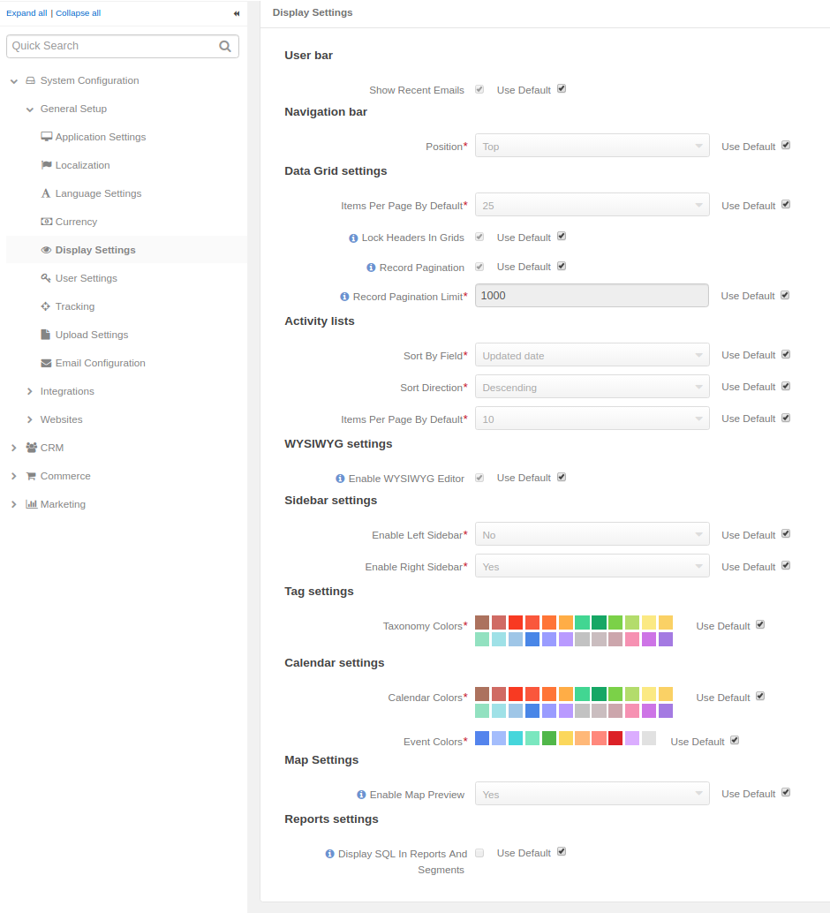
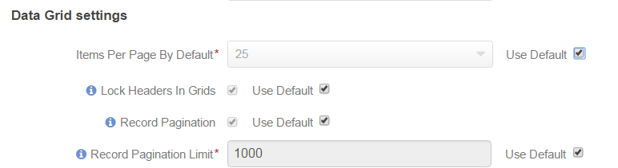
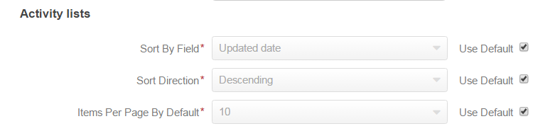
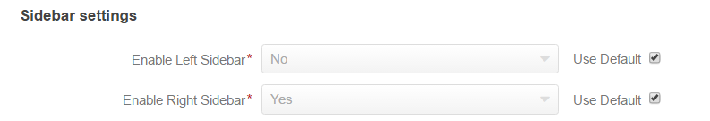
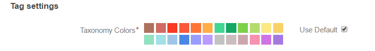
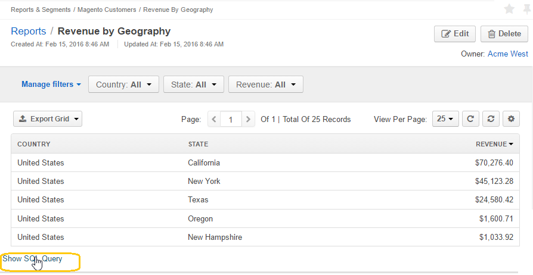

In this section you can define a number of display-related options to be applied to the Oro application:
To open display settings:
Note
See a short demo on how to set display settings in your Oro application, or continue reading the guidance below.
Data grid settings define different options used to display all the record lists (grids) in the management console.
The following options are available:
| Option | Description | Default |
|---|---|---|
| Items Per Page By Default | Defines the number of items displayed on one page of the grid by default (every time you open the grid). You can change the number each time. | 25 |
| Lock Headers In Grids | Defines whether grid headers will be locked on a page during scrolling. | Enabled |
| Record Pagination | If enabled, you can navigate to previous or next grid record from a view page | Enabled |
| Record Pagination Limit | Defines a maximum number of records available for the record pagination*. (If there are more records, the pagination will be disabled for the grid to avoid performance deterioration) | 1000 |
The activity list setting defines different options to be applied to display activities.
The following options are available:
| Option | Description | Default |
|---|---|---|
| Sort By Field and Sort Direction | Defines the field and direction used to sort activities in the grid by default (every time you open a page with the grid). You can changed the sorting of the grid each time. | By default the activities updated last will be shown at the top. |
| Items Per Page By Default | Defines the number of activities displayed on one page of the grid by default (every time you open the grid). You can changed the number each time. | 10 |
Define whether text formatting tools must be available for emails, notes, and comments.
The value is enabled by default.
Note
The formatting tools can also be enabled for other text fields in the course of integration.
By adjusting the sidebar settings you can enable or disable the left and/or right sidebar to keep your sticky notes and task lists. By default only the right sidebar is enabled.
Tag settings specify the taxonomy colors available in the system.
Calendar settings specify the colors available to manage calendars:
| Option | Description |
|---|---|
| Calendar Colors | A set of colors available for different users’ calendars. |
| Event Colors | A set of colors available for different events in the user’s calendar. |
| Option | Description |
|---|---|
| Enable Map Preview | Whether to show the location on a map when a customer views an address in the front store. |
Important
This option does not affect maps in the management console.
If this function is enabled, users can see the SQL request sent to the system for a report.
This way, users can check if a report has been developed correctly.
Hint
This link will only be available if the View SQL query of a report/segment capability has been enabled for the role.
{kind=link}